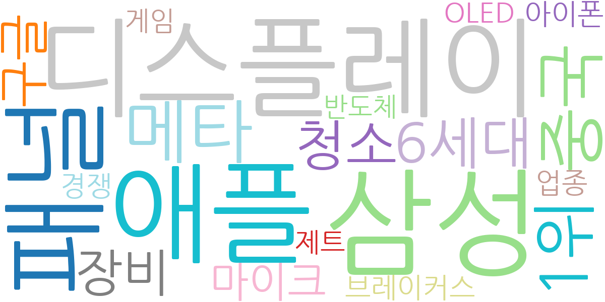
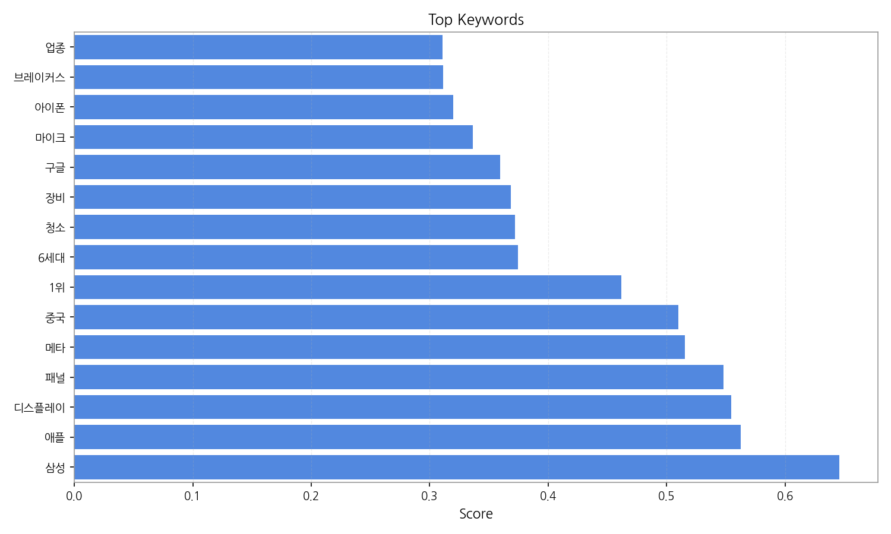
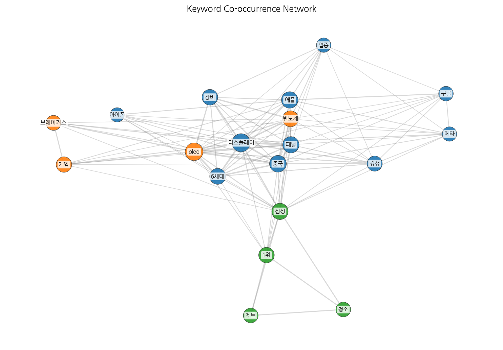
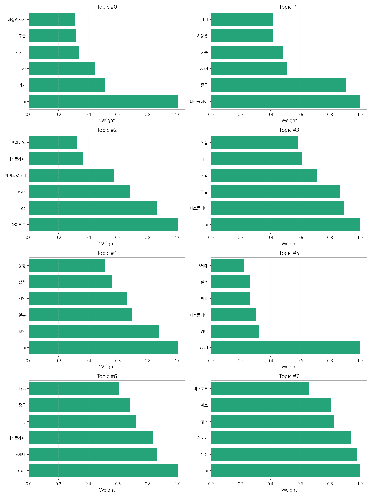
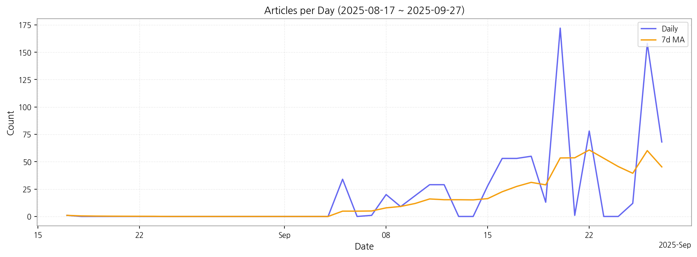

1. 핵심 맥락:
2. 최근 변화/스파이크:
3. 실무 인사이트:

| Rank | Keyword | Score |
|---|---|---|
| 1 | 삼성 | 0.646 |
| 2 | 애플 | 0.563 |
| 3 | 디스플레이 | 0.554 |
| 4 | 패널 | 0.548 |
| 5 | 메타 | 0.515 |
| 6 | 중국 | 0.510 |
| 7 | 1위 | 0.462 |
| 8 | 6세대 | 0.374 |
| 9 | 청소 | 0.372 |
| 10 | 장비 | 0.369 |
| 11 | 구글 | 0.359 |
| 12 | 마이크 | 0.336 |
| 13 | 아이폰 | 0.320 |
| 14 | 브레이커스 | 0.311 |
| 15 | 업종 | 0.311 |




1. 핵심 맥락:
2. 최근 변화/스파이크:
3. 실무 인사이트:
| Idea | Target | Value Prop | Score |
|---|---|---|---|
| 초고해상도 MicroLED 기반 AR 글래스용 광 엔진 모듈 | 북미 빅테크 기업 (메타, 애플, 구글 등) | 최고 수준의 해상도, 밝기, 명암비를 제공하는 MicroLED 광 엔진 모듈로 몰입감 있는 AR 경험 제공. 초소형, 저전력 설계로 AR 글래스 디자인 자유도 향상. 경쟁사 대비 높은 기술 경쟁력 및 차별화된 성능 제공. | 4.50 |
| AI 기반 개인 맞춤형 차량용 HUD 솔루션 | 글로벌 완성차 OEM 및 프리미엄 차량 구매 고객 | AI 기반 운전자 맞춤형 정보 제공으로 안전 운전 지원 및 사용자 경험 극대화. OLED 기반 고화질 디스플레이로 시인성 향상 및 다양한 정보 제공. 실시간 교통 정보, 위험 예측, 개인 선호도 기반 추천 기능 제공. | 4.20 |
| AI 기반 디스플레이 공정 자동화 및 수율 개선 솔루션 | 디스플레이 패널 제조사 | AI 기반 실시간 공정 데이터 분석 및 예측을 통한 수율 극대화. 불량 예측 및 원인 분석을 통한 공정 개선. 자동화된 공정 제어 및 최적화로 생산 효율성 향상. 숙련된 엔지니어의 의존도 감소 및 인건비 절감. | 4.00 |
| IT 기기용 폴더블 OLED 패널 솔루션 | 글로벌 스마트폰 및 태블릿 제조사 (삼성, 애플, 화웨이 등) | 향상된 내구성, 최소화된 주름, 경쟁력 있는 가격의 폴더블 OLED 패널 솔루션 제공. 얇고 가벼운 디자인으로 휴대성 극대화. 차별화된 힌지 기술 및 최적화된 소프트웨어 제공. | 3.80 |
| 퀀텀닷 기반 색 변환 필름 | LCD 패널 제조사 | 높은 색 재현율, 뛰어난 광 효율, 낮은 생산 비용의 퀀텀닷 기반 색 변환 필름 제공. 기존 필름 대비 향상된 성능 및 가격 경쟁력 제공. 다양한 LCD 패널에 적용 가능한 맞춤형 솔루션 제공. | 3.50 |